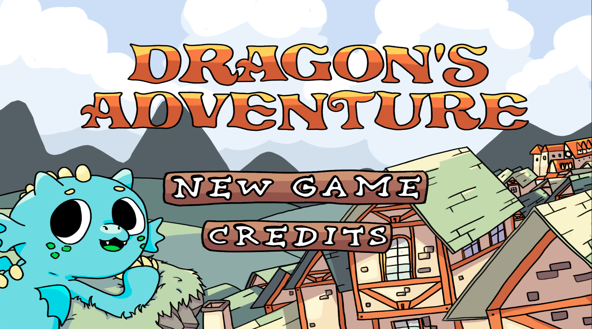
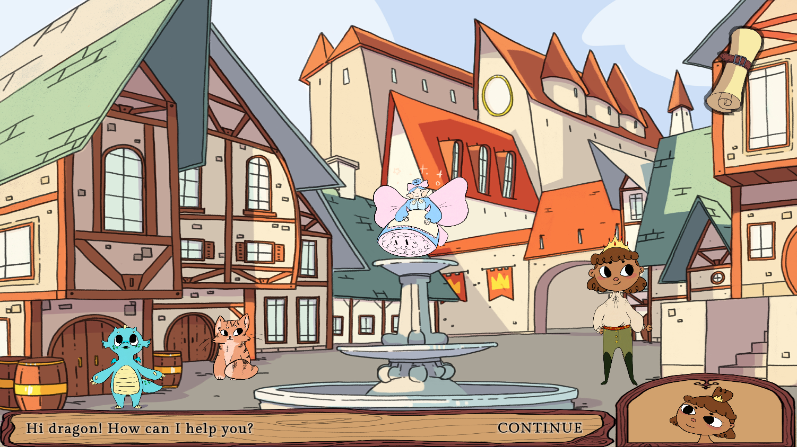

Dragon's Adventure

User Researcher and Software Engineer
Summary: On a team of five computer science students, I helped design a point-and-click game for preschoolers. Our research showed that "simple" design isn't the same as design for children who are just learning to read, so we built around read-aloud dialogue, gentle pacing, and a smaller but more polished game. Play the game on itch.io.
Context
Wholesome, safe, and engaging computer games were almost non-existent for preschool children, leading to frustration for both parents and the young gamers. The existing games were often too fast-paced or challenging, required reading skills the children lacked, and used frustrating or predatory mechanics like paywalls.
Action
I conducted informal interviews with parents (including the sponsoring professor) to catalog their pain points with existing games. Then with my team, I analyzed early 2000s educational games and current children’s apps to identify design patterns that seemed likely to foster success vs. frustration with respect to the pain points we identified. Some of the design guidelines I synthesized for our new game were:
- Create a gentle game pace
- Limit the words on the screen, and have a voice actor read them aloud
- Use large buttons and limit the fine motor skills required (most children were just beginning to use a mouse)
- Allow players to escape from challenges they are stuck on
Two findings changed our direction. First, text-only dialogue doesn't help children who are just learning to read, even when the interface looks simple to an adult. Second, bugs and confusing gameplay that older kids can work around were very frustrating for the youngest players. As a team, we chose to cut scope and put our time into a smaller, more polished game instead of a larger, buggier one.
I also wrote the code for the “kingdom area” of the game with one of my teammates.

Result
A preschool-aged player playtested the game and enjoyed it and could use it. Our team of five received the Niehaus Award for outstanding workmanship, voted on by the Computer Science senior capstone cohort. The game also served as a pilot for a new interdisciplinary game design course at the University of Kansas, and the professor who led the course cited it in a 2024 paper, "A Retrospective on Creating a Video Game Course to Promote Interdisciplinary Collaboration."
Reflection
The playtest came at the end of the project, so it confirmed the game worked for a preschooler but didn't shape the design. With more time, I would run several small playtests with preschoolers throughout development and revise based on what we saw.